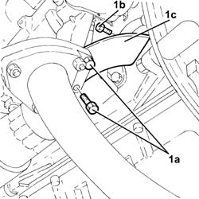
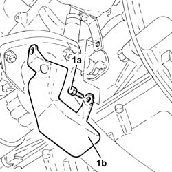
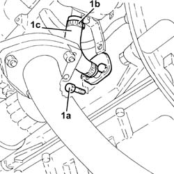

1084B42 engine oil return pipe from turbo - r + r
- Path
- Procedures > 10 ENGINE > 1084 ENGINE LUBRICATION > 1084B ENGINE OIL LUBRICATION CIRCUIT > 1084B42 engine oil return pipe from turbo - r + r
- Kind
- repair procedure (removal / refitting; the operation number is the code)
- Applies to
- all engines; all production periods
- Interactive page
- https://sloeber94.github.io/elrnDB-fDbl/en/#/2584435
Applies to: all engines; all production periods
 Removing
Removing
 Refitting
RefittingCarry out 7055B54 under-engine guard - r r .
Carry out 1064A11 TURBOCHARGER with CATALYTIC CONVERTER - R.R. .
Applies to: all engines; all production periods
Removing
RefittingPosition the vehicle on the ramp.
Proceed with the removal 7055B54 under-engine guard - r r .
1. Undo the nuts (1a) (1b) and remove the turbocharger bracket (1c).

Applies to: all engines; all production periods
Refitting
RemovingCarry out 1064A11 TURBOCHARGER with CATALYTIC CONVERTER - R.R. .
Carry out 7055B54 under-engine guard - r r .
Applies to: all engines; all production periods
1. Undo the bolts (1a) and remove the protection (1b) for the engine oil return pipe from the turbocharger.

Applies to: all engines; all production periods
1. Undo the bolts (1a), loosen collar (1b), then remove the engine oil return pipe from the turbocharger (1c) with flange.

Applies to: all engines; all production periods
Refitting
RemovingRefit the engine oil return pipe from the turbo with flange and then tighten the bolts and collar.
Replace the protection for the engine oil return pipe from the turbocharger and secure using the bolts.
Place the turbocharger mounting bracket back in its housing and secure it using the bolts.
Proceed with the refitting 7055B54 under-engine guard - r r .
Remove the car from the ramp.